Project overview
RES combines precise pollen detection with actionable insight, empowering people to breathe easier and live better. Pollen allergies affect one in two people worldwide, but in the whole of London there is only one robust pollen detection machine.
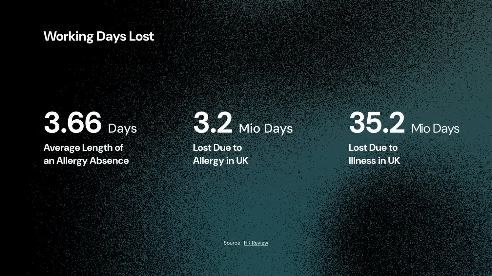
Background
RES was a team project during my double master's in Innovation Design Engineering at Imperial College London and the Royal College of Art. There were four of us, assembled across the two things the problem needed: engineers who could actually build a pollen sensor, and business students who could work out whether a network of them could ever pay for itself. I joined as the designer, the only one on the team.
That shaped what I was there to do. The engineering question was how to sample pollen accurately and cheaply; the business question was how to distribute it. Neither answers the question a person with hay fever is actually asking, which is whether to go outside this afternoon. Closing that gap was my brief, and everything below is what we took to the final review.
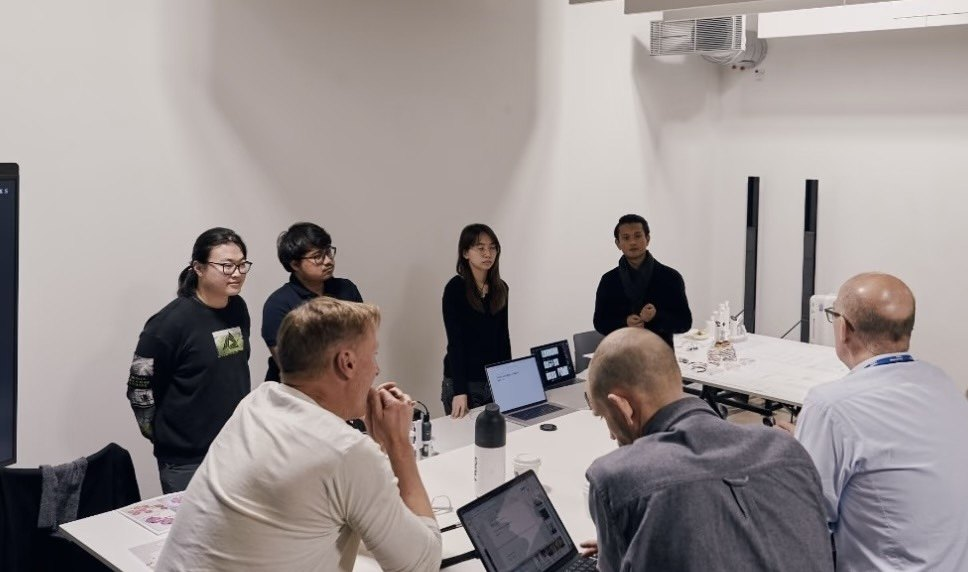
My contributions
I owned the experience end of the project: everything that happens after the sensor has a reading.
- UI/UX design. The whole app, from the allergy profile a user builds on first launch through to the location alerts and the prediction map.
- Customer workshops and interviews. I ran the user sessions, then translated what came out of them into requirements the engineers could build against.
- The core idea. That a forecast on its own changes nobody's behaviour, so RES had to ship as a sensor and a decision tool together, not as a data source with an app bolted on.
- Product positioning and vision. Deciding what RES was and what it wasn't, then holding that steady when the engineering case and the commercial case pulled in different directions.
User research
We interviewed over 20 allergy sufferers, ran workshops with 10 users, and consulted several professors and industry experts on current allergy-management challenges. From those conversations, one frustration stood out: the lack of personalised allergy-prevention tools.
People want effective, data-driven ways to manage their symptoms, with minimal manual intervention. Everyone has their own way of mitigating symptoms, so we designed the app experience to work with that, refined further by feedback from pollen and allergy experts.

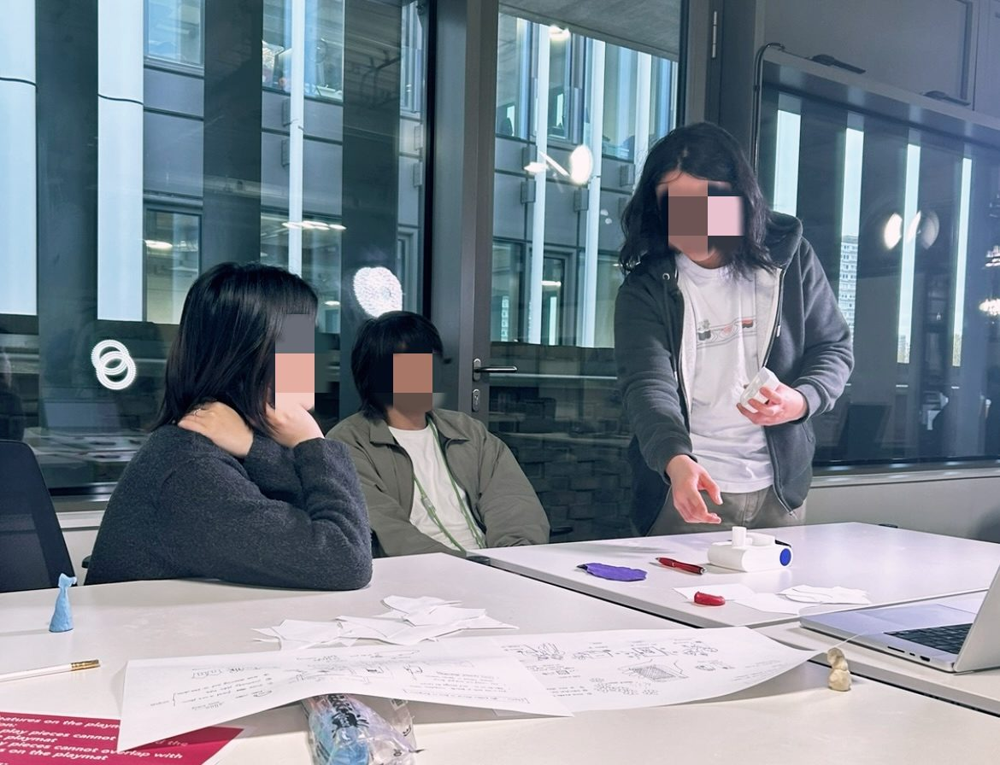
The feature workshop: users ranked their own needs
Desk research and interviews gave us ten features people said they wanted. Ten is too many to build, and asking a designer to pick five is guessing.
So I ran a workshop instead. Everyone in the room had a pollen allergy. I put all ten features on torn paper cards and asked them to group them, order them, and say out loud why they needed each one. They built the product, and they defended it.
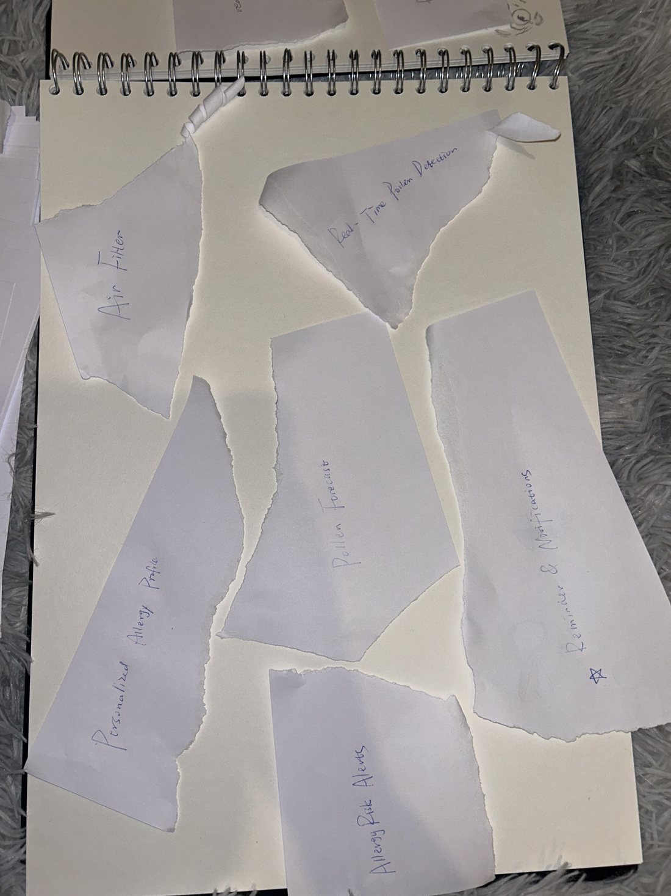
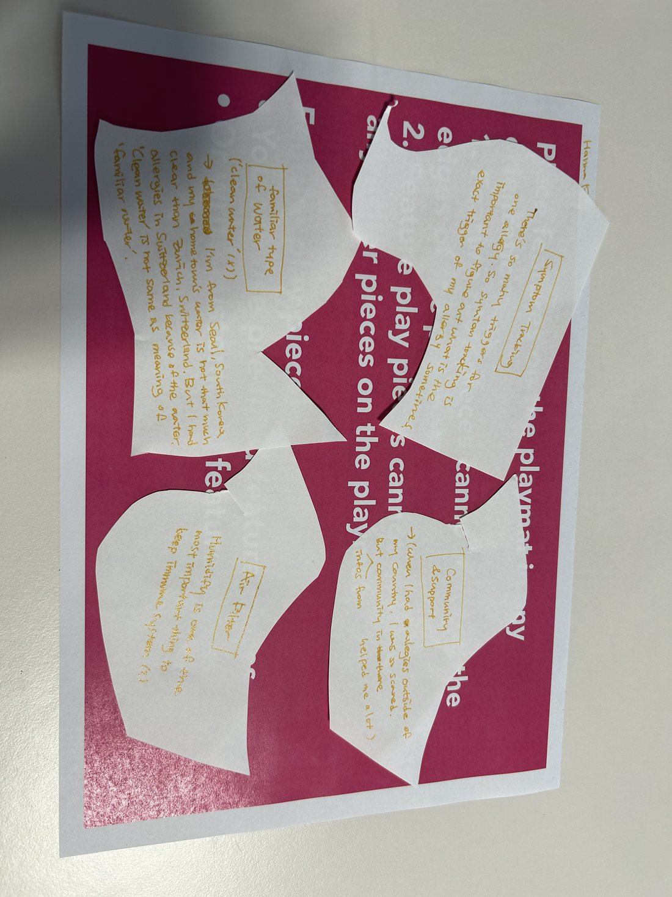
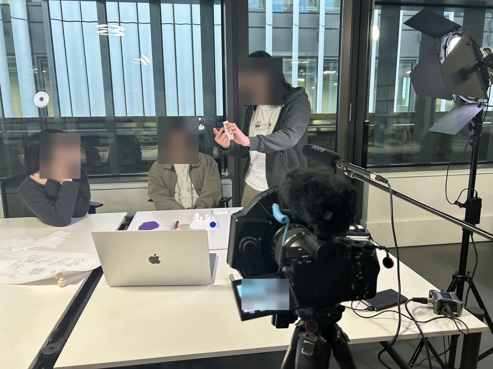
Five came out on top, in this order:
- 1Predicting an allergy before it starts
- 2Medication reminders
- 3Route recommendations
- 4Allergen analysis
- 5The pollen map
Everything we designed after this answered to that list. The ranking came from users, so the roadmap did too. It also killed features that had looked reasonable on paper, which saved us building them.
A/B testing the map: region, or precise point?
The workshop told us people wanted a pollen map. It did not tell us what the map should show. So we tested it.
We put two versions in front of users. One showed precise density at individual points, a scatter of exact readings. The other showed a whole area shaded as one. We asked which they would act on.
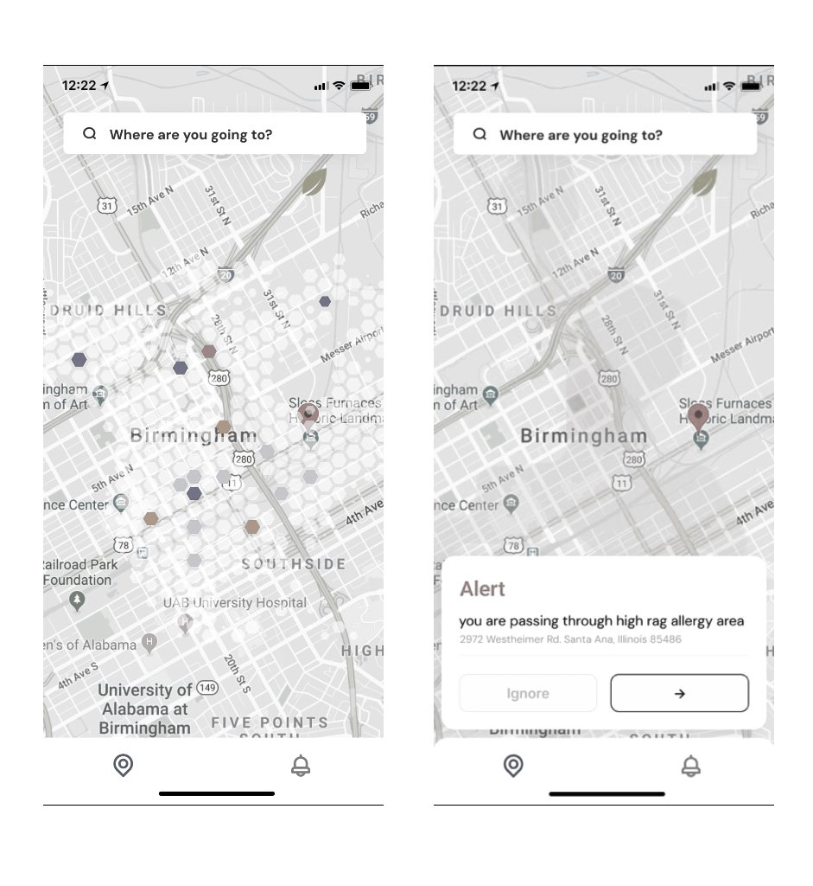
Users chose the area version, and the reason was consistent. A precise number at one street corner does not tell you whether to walk down that street. What people want to know is whether the place they are heading into is bad. Exact points made them do the summarising themselves, and they did not want to.
So the final map shades by region instead of plotting points.
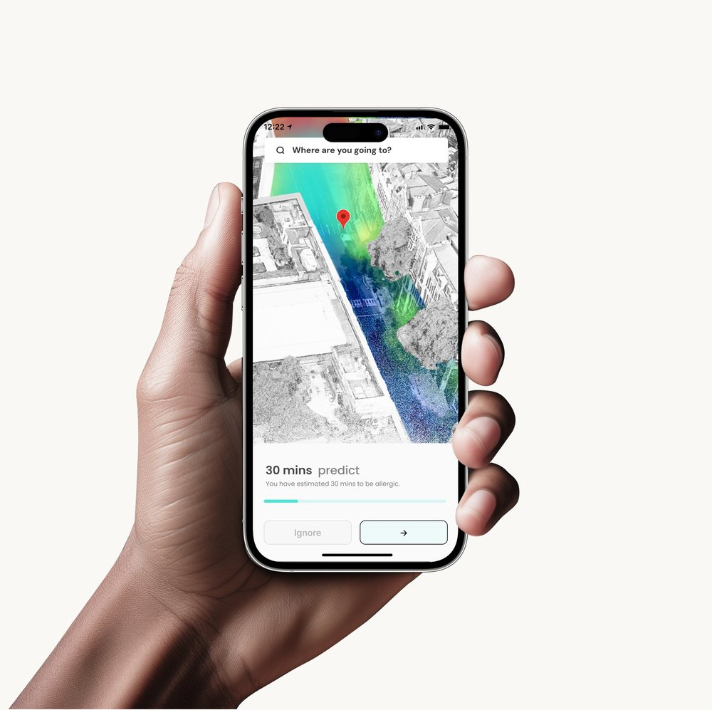
Stakeholder workshop
Today's pollen-measurement system still carries last century's design, with real drawbacks:
- Inadequate sensors: limited, unevenly distributed pollen sensors create location bias, undermining reliability across many localities
- Unverifiable correlation: unlike weather data, pollen counts are hard to verify; low-fidelity sensors can report low pollen while individuals still react
- Cognitive biases: even severe allergy sufferers, lacking accurate testing or knowledge, can misidentify their triggers
- No lifestyle change: a forecast alone rarely changes behaviour; people need predictable, actionable data that respects their preferences
"Current methods of pollen allergy avoidance are inadequate; almost any amount of pollen can be an allergic trigger. So what if pollen forecasts could be designed to be more localised and effective for avoidance and mitigation?"
Approach
We looked at allergies from three angles at once: clinically, avoidance is the best treatment; technically, sampling pollen with sufficient accuracy is critical; and from a patient's view, knowing when it's safest to travel matters as much as the forecast itself.
RES Device
Collecting data from multiple distributed sensors removes location bias, widening the reach of pollen-detection data and improving our collective understanding of what's in the air.

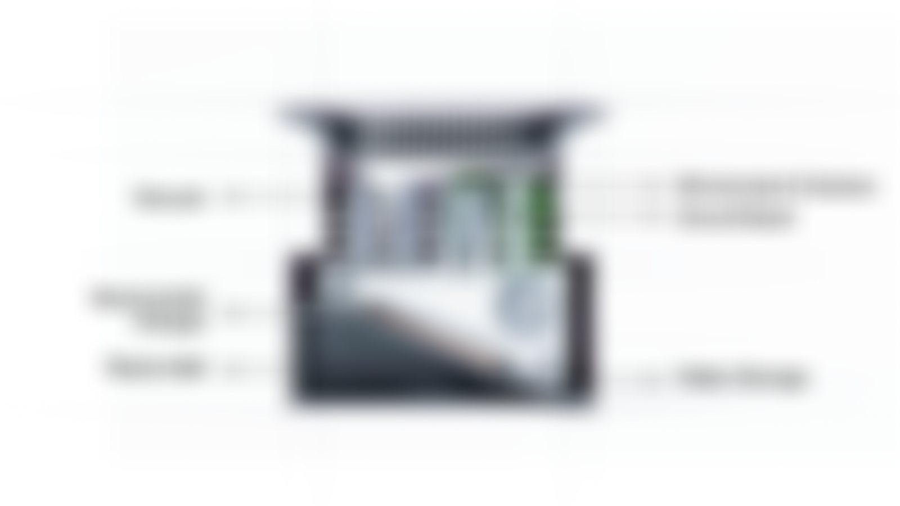
RES App
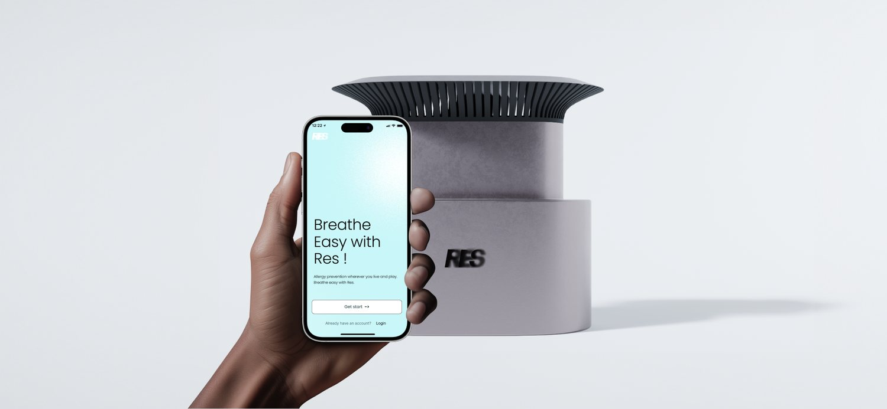
Shows people how to avoid pollen or mitigate their allergies with more bespoke antihistamine dosages, multiplying the sensor's effective reach, and it does more than report its readings.

AI-driven
AI and API data enable swift, accurate detection, enhancing immediacy and precision while the distributed sensor network keeps removing location bias.

Prediction map
A simulated RES pollen map over a few hours. Interact with gestures and explore hour by hour.
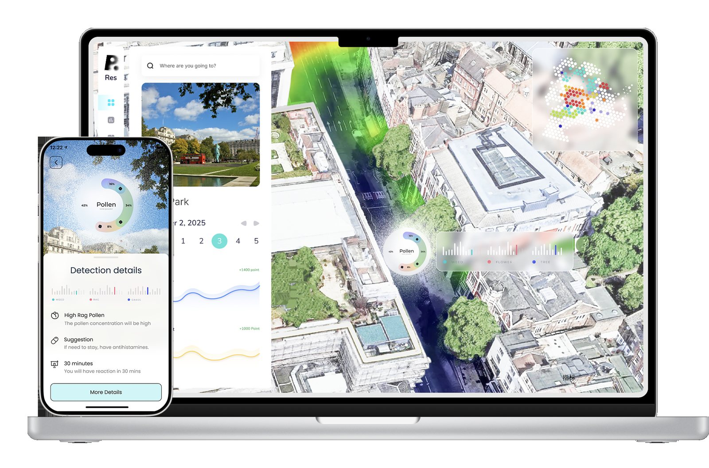

Customised app
Allergy details: everyone can see system info and self-report at any time, becoming part of the overall system service. Allergy forecast: predicts in real time when and where a reaction is likely, telling users when to take medicine and at what dosage the first time they're exposed.

Revisiting the interface, 2026
The screens above are what the team shipped in 2025. Coming back to them after a year at Xiaomi Auto and 1Soul, I can see exactly where my craft was thinner than my thinking: the data was there, but it wasn't ranked, so the screen never said which number to act on. Percentages sat in a ring chart that's hard to compare across three categories. The advice was generic where the whole premise of RES is that it knows your trigger.
So I redesigned the three core screens against the same requirements, on a deliberately narrow system: a cool grey ground with a faint lavender cast, one accent colour carrying the reading you're meant to act on and a single muted second tone for everything ranked below it, figures set large enough to read at arm's length, and frosted glass only where a sheet genuinely sits over live context. The ground matters more than it sounds. My first pass used warm cream and amber, and it made the app feel like the symptom rather than the tool; cooling it down gives the one warm accent somewhere to land.
Nothing here shipped; it's a personal exercise, dated as such, and I'm keeping the originals alongside because the gap is the point.
2025 · shipped
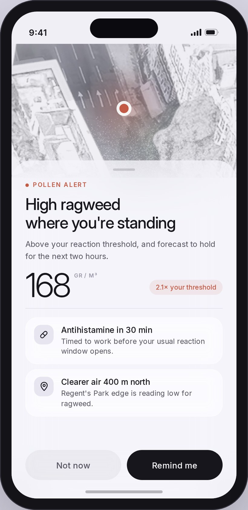
2026 · redesignedAlert. The original led with the word "Alert" and a duration. The redesign leads with what's actually happening and to whom, states the reading against the user's own threshold, and turns "take 2 pills" into a timed action plus an escape route: where the air is clearer.
2025 · shipped
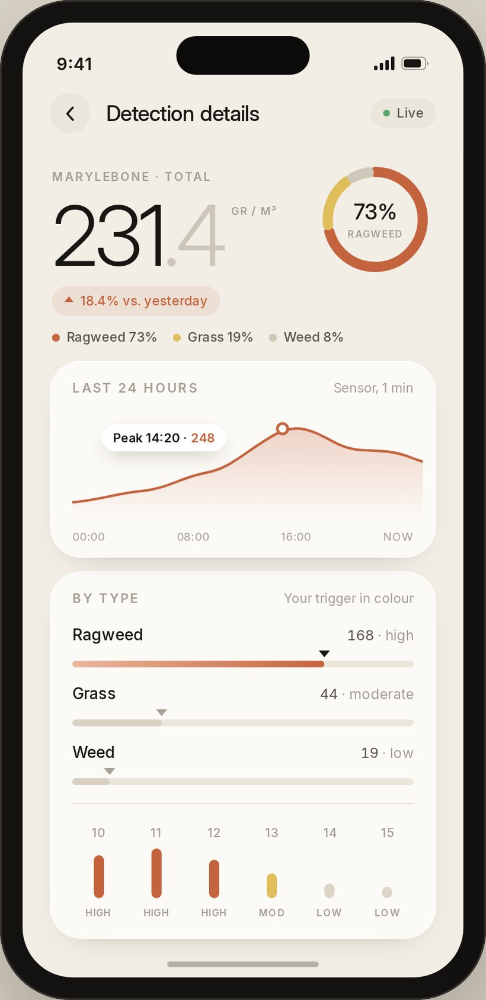
2026 · redesignedDetection details. Three separate sparklines can't be compared at a glance, so the original made you do the work. Two things stay, because they were the right ideas: the composition ring, which tells you in one glance what the air is made of, and the photograph, which is what stops a screen full of numbers feeling like a spreadsheet. What changed is everything around them. Past and forecast are now one continuous line through a NOW marker instead of two separate widgets, the three types are ranked on one shared scale, and colour is spent only on the type you actually react to.
2025 · shipped
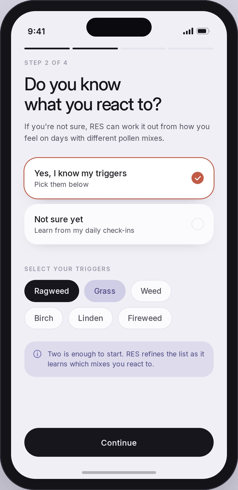
2026 · redesignedOnboarding. Asking someone to name their allergen assumes they've been tested; most haven't. The redesign makes "not sure yet" a first-class answer that RES can learn from, shows progress through the flow, and only reveals the pollen picker once it's relevant.